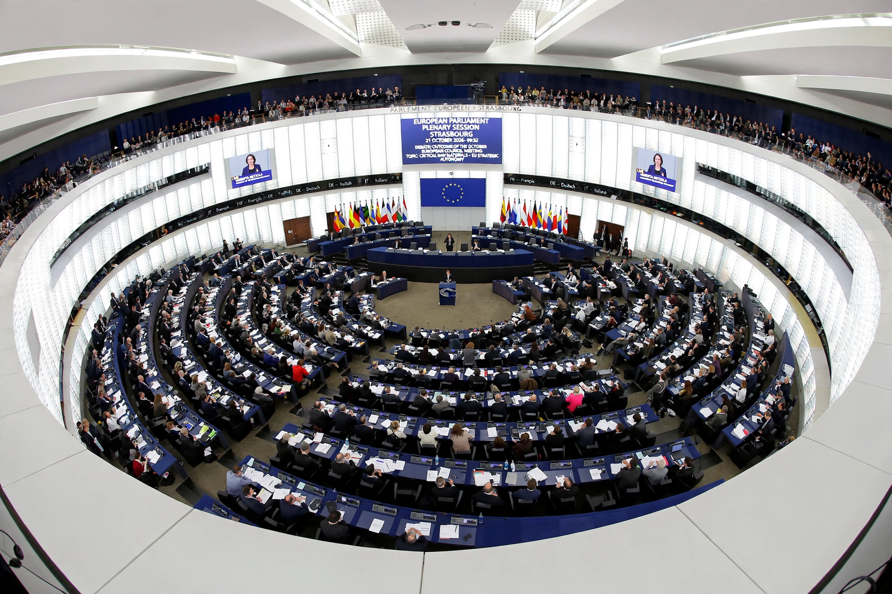

Elections to the European Parliament

Elections to the European Parliament are held every five years to elect the members of the European Parliament (MEPs), the directly elected legislature of the European Union. First held in 1979, they are among the largest transnational elections in the world, with an electorate of roughly 360–370 million eligible voters across the 27 member states.
System
Each member state elects MEPs by proportional representation, using national or regional lists or the single transferable vote; seats are allocated to states by "degressive proportionality", so smaller states are over-represented relative to population. The Parliament elected in 2024 has 720 seats. Voting takes place over several days (Thursday to Sunday) in June, with each country voting under largely national rules on franchise, thresholds and campaigning, and candidates standing under national party labels; elected MEPs then sit in transnational political groups such as the European People's Party, the Socialists and Democrats, Renew Europe, the Greens/EFA, the European Conservatives and Reformists, Patriots for Europe and The Left.
Campaign and significance
Since 2014 the major European parties have nominated lead candidates (Spitzenkandidaten) for President of the European Commission, linking the election result to the choice of Commission leadership, though the European Council is not bound to follow the outcome and did not do so straightforwardly in 2019. Turnout, long declining — falling below 43% in 2014 — recovered to just over 50% in 2019 and remained around that level in 2024. Elections are often treated by voters and media as "second-order" contests dominated by national issues, and protest and Eurosceptic parties have historically performed strongly in them.
The 2024 election
In the most recent election, held 6–9 June 2024, the centre-right European People's Party remained the largest group, while parties of the nationalist and far right made gains in several large member states and liberal and Green groups lost ground. The results feed directly into the Parliament's legislative work with the Council under the ordinary legislative procedure.